Developing an ATP Forehand: Part 2: The Forward Swing¶
Brian Gordon, PhD
In the first article on the ATP Forehand, we looked at how to create the "dynamic slot," the key technical element in the early forward swing that top players use to turbocharge their forehands.
Now in this second article let's look at the rest of the forward swing. What happens between the creation of the dynamic slot and the contact point? The answer is surprising and may change your views when it comes to the hotly debated role of the wrist in the modern forehand.
First a brief review. The dynamic slot creates a turbocharging effect because it brings elements of the stretch-shorten cycle into play in the shoulder muscles, and to a less important extent, in forearm muscles as well. The use of stretch-shorten cycle elements causes a significant increase in the ability of the muscle to produce force.
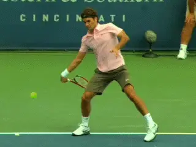
What happens between the dynamic slot and the contact in the ATP forehand?
This is why the dynamic slot is instrumental in maximizing racquet velocity in the professional game. But it is a relatively simple technique that can be developed by players of all ages and levels.
[It is important to note that, when done correctly, players do not create the dynamic slot through conscious muscle manipulation. The dynamic slot occurs as a result of the correct positioning of the arm and racquet in the backswing and at the start of the forward swing.]
By creating specific positions during the preparation and the backswing, any player can create the dynamic slot naturally. If these positions are established, when the hand pulls the racquet forward toward the contact, it causes the racquet and hitting arm to "flip" into the dynamic slot, a motion that is dramatically demonstrated in TPA high speed video.
The creation of the dynamic slot is what distinguishes the ATP style, or what I call the Type 3 forehand, from the Type 1 or Type 2 forehands, forehands that are more common on the women's tour and in junior tennis.
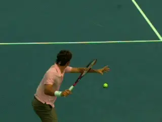
The creation of the dynamic slot naturally turbocharges the forehand
Three Dimensions
My insight into the intricacies of the ATP style forehand, has resulted from years of quantitative research utilizing 3D motion capture technologies. This has allowed me to measure the biomechanics of literally hundreds of players.
I believe that 3D analysis is necessary to address the critical questions about the forehand, and about all the other strokes as well. This is because the critical movements in tennis happen far too fast for the naked eye to see. Even high-speed video, while visually powerful, gives no insight into how the muscles are actually functioning or a quantitative way to evaluate the differences in the types of strokes.
My research helps provide a new set of answers to questions that could not be previously addressed. But what the 3D research shows is only the first part of the story.
The next step was designing a methodology for teaching the techniques to developing players. This methodology was developed over the last two years through my collaboration with renowned developmental coach Rick Macci at his academy in Boca Raton, Florida.

3D analysis: answers to questions that previously had none.
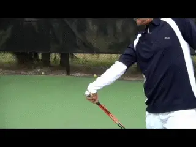
Look for future articles from Rick on applying 3D research in stroke development.
Rick and I call this teaching system, Biomechanically Engineered Stroke Technique, or B.E.S.T. for short. We consider the B.E.S.T. system a breakthrough in understanding how to create world-class fundamentals.
As I noted in the first article, Rick will himself be doing a new series of original articles on TPA talking about his interpretation of the research and how he has incorporated it in teaching and training at his academy. This will compliment my articles which attempt to outline more of the theoretical basis.
On to Contact
So what happens in the forward swing after players attain the dynamic slot in our system?
To understand this, it is helpful to separate the forward swing into two distinct parts. This is because completely different things are happening in the two parts.
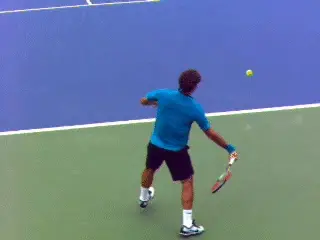
The Transition Point: the moment when the racquet becomes perpendicular to the baseline.
These two parts in the forward swing are divided by what I call the transition point. So what exactly is the transition point and where does it occur in the forward swing?
[The transition point is the exact moment when the tip of the racquet becomes laterally aligned with the butt (grip) end of the racquet. Put into simple terms, this [means the point in the forward swing when the racquet is basically perpendicular to the baseline.]]
Why is this important? The transition point in the ATP style forehand marks the transition from a largely linear acceleration of the racquet to a largely rotational acceleration of the racquet.
It marks the point when the racket starts to rapidly rotate forward toward the contact point. [On the ATP style forehand this rotation occurs primarily through the movement of the wrist joint, as we shall see.]
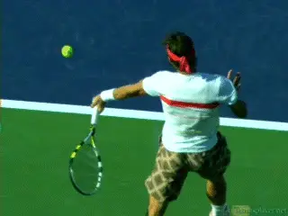
After the transition, racquet rotation from the wrist joint.
The precise location of the transition point in the forward swing is very important. It can vary substantially, and this has a big impact on how the player creates rotational acceleration, even at the highest levels of tennis.
The role of the transition point also differentiates the Type 3 forehand from Type 1 and Type 2 forehands. In the Type 1 or Type 2 forehand the transition point has little meaning.
This is because without the dynamic slot, the linear acceleration is less evident and dramatic. As the player starts to move the racket toward the contact, the swing is much more curved. Without the more linear dimension in the early forward swing, there is no dramatic transition to rotational acceleration.
Pre-Transition
Why is this transition so important? To really understand, let's look again at the first, relatively linear part of the forward swing.
The dynamic slot and the characteristic backward rotation of the racquet, or "the flip", has two important effects.
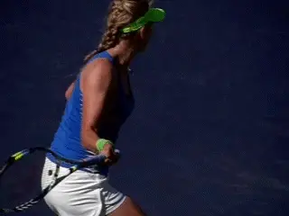
The Type 1 and 2 forehands travel forward toward contact on more of a curve.
The first is the counter-rotation of key arm segments. These include backward or external shoulder rotation, forearm supination (the backward rotation of the forearm), and also, the wrist lay back.
The second effect is the orientation of the shaft of the racquet. The flip aligns the shaft of the racquet closely with the force that is generated by the pull on the grip by the hand.
The counter-rotations of the arm joints are occurring during most of the first part of the forward swing. This is where the mechanisms of the stretch-shorten cycle come into play.
As discussed in Part 1, if the muscle groups opposing the counter rotations are contracting eccentrically (to slow the counter-rotations), then elements of the stretch-shorten cycle are engaged. This in turn will enhance muscle force production at the key arm joints (particularly shoulder internal rotation) in the second half of the forward swing.
This mechanism makes a major contribution to the creation of racquet head speed, specifically, vertical racquet head speed, as we will see.
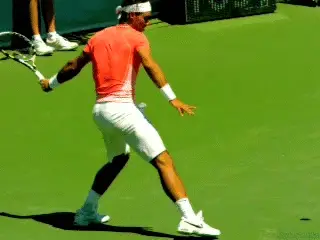
On heavier topspin shots the racqet can flip until the tip points at the court.
The amount of flip also determines the extent of the counter-rotations and orientation of the shaft of the racquet as the forward swing progresses. This variation in the flip is critical in controlling the amount of spin on a given shot.
For example on a shot intended to have more topspin, the racquet flips further, so the racquet head drops further below the incoming ball, pointing down at the court on a diagonal. Conversely, less flip is associated with a flatter shot.
For a player who understands this, controlling the flip allows him to access his full range of topspin levels---the more flip the more spin. Meanwhile the forward racquet head speed contributors remain essentially unaltered.
The racquet orientation aspect of the dynamic slot is important to development of horizontal racquet head speed in the forward swing. As noted in Part 1, the hitting arm set up at the end of the backswing allows the hand to track a relatively straight (forward and slightly lateral) path towards contact, especially in the first part of the forward swing.
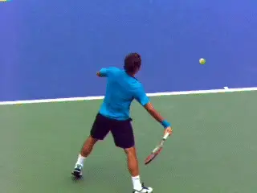
The hand tracks a linear path toward contact in the early forward swing.
From the latter part of the dynamic slot to the transition point, the flip of the racquet aligns the racquet shaft closely with the direction of the hand path. This allows the racquet to follow the hand as it tracks the relatively straight (forward and slightly lateral) path towards contact.
This means that over a large portion of the first part of the forward swing the racquet is being pulled linearly grip end first. This is why there is a period of relatively linear acceleration.
[This more linear path simplifies racquet acceleration compared to more the more curved paths in the Type 1 and Type 2 forehands. It does this by minimizing the rotational tendencies of the racquet as the hand pulls on the grip early in the forward swing. We will discuss how the rotational acceleration works in greater detail below, as well in future articles.]
[In the ATP style forehand these rotational tendencies of the racquet appear later due to the more linear nature of the early forward swing.] We can see this in the high speed video, as the racquet follows along directly behind the path of the hand.
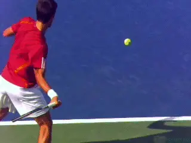
The early linear forward swing with the racquet following the hand.
[While you can see that the forward motion is on a slight curve, the arc is quite flat. [Again, what that means is that much of the acceleration in the first part of the movement to the contact is essentially linear.]]
Post-Transition
So that's the first part of the movement to the contact--from the dynamic slot to the transition point. Now, let's talk about what happens post transition in the second part of the forward swing.
[During the second part of the forward swing the counter-rotations of the hitting arm joints are reversed by the joint musculature into their intended directions.] In the Type 3 ATP style swing, the reversal from external rotation of the shoulder joint to internal rotation of the shoulder joint is the most critical sequence.
This happens after the transition point and in fact closer to the contact. Because the shoulder musculature was eccentrically stretched (or pre-stretched) during the counter-rotation, it can now produce more force when rotating the joints in the intended direction.
In Part 1, we saw that a distinguishing feature of the Type 3 swing was independent motion of the hitting arm. In the Type 1 and to a lesser extent in the Type 2 forehand, the body and arm rotate as a unit.
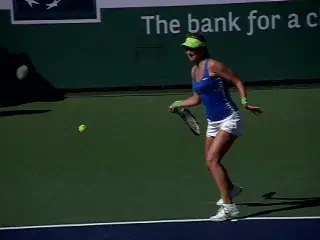
Compared to the Type 2 forehand, the upper arm on the Type 3 Forehand points more toward the net at contact.
But with the ATP style swing, the hitting arm is pulled through the trunk rotation through independent use of the shoulder muscles, rather than simply rotating with it. This means the arm is positioned well in front of the body at contact.
With this contact position, the upper arm segment is also pointing more forward. At contact in the Type 3 swing, a line drawn from the shoulder joint to the elbow joint points more toward the net and less downward when compared to the Type 1 and 2 swings.
This positioning of the upper arm means that as the shoulder internally rotates it causes the racquet to move vertically.
The net effect is that the neuromuscular enhancement created in the dynamic slot is realized as enhanced vertical racquet speed at contact. And vertical racquet head speed is, of course, the source of topspin.
The beauty of this is that the enhancement of vertical racquet speed is independent of the sources of forward racquet speed. This clean partitioning of forward and vertical racquet speed allows them both to be optimized concurrently.
In other words, the trunk rotation and independent forward motion of the hitting arm at the shoulder joint on the ATP style forehand contribute fully to forward racquet head speed regardless of how much shoulder internal rotation is used to generate topspin.
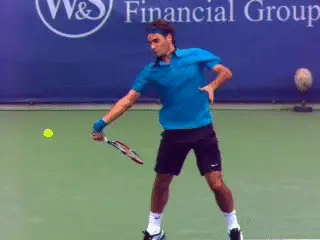
The comparative angles of the biceps show the greater forward arm rotation in the straight arm versus the double bend.
This partitioning is cleaner in some arm configurations than others. A straighter arm (more fully extended elbow) allows more dynamic shoulder external rotation (counter-rotation) during the flip into the dynamic slot.
The result is even greater neuromuscular enhancement of the shoulder internal rotation near contact. The straighter arm configuration also allows the orientation of the upper arm near contact to be even more forward (parallel to the court) than if the elbow is bent for any height of incoming ball.
This makes the straight arm forehand more effective in creating vertical racquet head speed. This is a primary mechanical difference between the "straight arm" forehand and the "double bend" forehand.
A bent elbow during the racquet flip into the dynamic slot creates somewhat less shoulder external rotation and more supination of the forearm. You can see this clearly by watching the angle of the biceps in the animation comparing Federer and Djokovic.
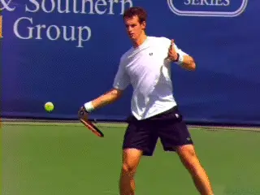
The straight arm may have advantages, but the double bend is still predominant even on the ATP tour.
In addition, in the double bend, the orientation of the upper arm is more downward (vertical to the court) near contact. Due to this contact orientation of the upper arm, the neuromuscular enhancement from the counter rotation of the shoulder (or external rotation) contributes less to vertical racquet speed.
[Compared to the straight arm, this means that with the double bend the neuromuscular enhancement of the forearm from the counter-rotation in the dynamic slot plays a larger role in creating vertical racquet speed.]
While there are advantages to the straight arm forehand, there are also difficulties associated with the timing of the contact point more in front. Even at the highest levels, players who use the double bend such as Novak Djokovic can have tremendously effective forehands, and the double bend is still probably the predominant arm structure, even on the ATP tour.
Laid Back Wrist
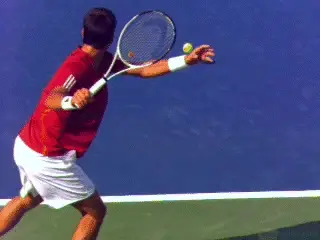
The third rotation created by the dynamic shot---the laid back wrist.
We noted earlier that the third rotation created by the flip into the dynamic slot was the laid back wrist. Unlike the shoulder and the forearm however, the wrist motion is generally not targeted for enhancement by elements of the stretch-shorten cycle.
[In fact, the situation is normally quite the opposite. Instead the real role of the wrist is positional. The laid back wrist position provides the player with wrist joint range of motion needed to position the racquet head at contact.]
To understand what all this means, we need to examine the forward motion of the racquet head after the transition point, when the nature of the acceleration changes.
Prior to the transition point, as we have seen, the acceleration of the racquet was relatively linear. At the transition point the racquet begins a rotational acceleration.
It has been observed by some that this rotational motion appears to be related to wrist joint motion. In fact, wrist joint motion is often evident in the high speed video, and is most obvious in the players with more the conservative grips like Roger Federer.
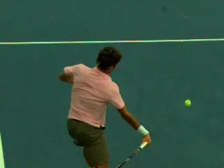
The rotational acceleration of the racquet comes from wrist joint motion.
In Federer's case, this forward wrist motion seems to be about 45 degrees. If you watch Federer's forehand coming out of the slot, there is roughly a 90 degree angle between the racquet and the forearm. At contact, it has changed roughly 45 degrees.
Wrist Snap?
Many observers have concluded that this wrist joint motion is caused by conscious muscle driven wrist motion---the so-called wrist snap---and even that this motion is potentially enhanced by stretch-shorten cycle mechanisms.
Is that an accurate description? 3D quantitative data indicate the role of the wrist joint motion is actually much more complex.
[Remember that the hitting hand comes out of the dynamic slot on a fairly straight line because it starts to the hitting side of the body. But as the arm passes through the torso rotation and approaches contact, the hand will start to pull in closer to the torso.]
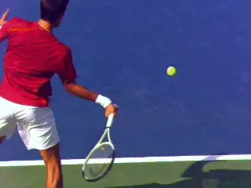
As the hand approaches contact it moves on a curve back to the player's left.
This is because the arm is rotating around the shoulder joint. The effect is that the hand starts to move back on a curve to the player's left.
As the hand moves inward and to the left in this fashion, the force the hand is exerting on the racquet also turns inward. Understanding this is critical to understanding what is happening with the wrist.
The centripetal component (ie, towards the center of rotation) of this force of the hand on the grip would tend to cause the racquet to rotate around it own center. But because the racquet is held firmly in place the hand, this racquet rotation will only occur if joint motion allows it to do so. On the ATP style swing the wrist is the primary joint allowing this racquet rotation.
To see how a centripetal force can cause rotation of the racket, just hold onto your racquet with your thumb and two fingers and swing the arm. The racquet rotates because the force from the fingers is pulling towards the center of the rotation. Since the racquet is not being firmly held, the rotation of the racquet around its center occurs as the grip slips in the fingers.
[So the motion of the hand--a combined result of trunk rotation and independent forward motion of the arm at the shoulder--creates a centripetal force. This force causes the racquet to rotate via the forward movement of the wrist joint.]
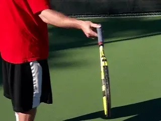
Hold the racquet with two fingers and you can feel the subtle rotation to contact.
This is apparent in the high speed video when we see the change of the angle of the wrist lay back between the transition point and the contact. So is this or is it not the fabled "wrist snap" that players and coaches have been debating for years?
Yes, the motion of the wrist joint is bringing the racquet head around, and yes this is contributing to racquet head speed in a significant way. But is this the result of the player's decision to forcibly "snap" the wrist forward?
The answer appears to be no and this is one of the surprising result of our 3D research. There is no conscious forward wrist snap.
Rather than snapping the wrist forward, the muscles that control the wrist joint appear to be doing the exact opposite. These muscles are actually resisting the forward wrist joint motion.
Rather than reducing the angle of the wrist lay back, they are in fact acting in opposition to the effect of the centripetal force that is the source of the rotational acceleration. They are contracting (though eccentrically lengthening) to control the rate of racquet rotational acceleration.
Given this role of the wrist joint muscles, it seems the wrist lay back in the dynamic slot is not a counter-rotation that targets stretch-shorten cycle enhancement.
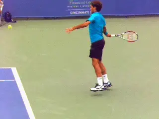
Compare the wrist angle on a crosscourt forehand to an inside out.
[But if the role of the wrist joint muscles is not to cause racquet head speed then what is their actual function?]
[The answer is they have another equally vital role. This is positional. They control the orientation of the racquet at contact which is an important determinate of the shot direction.]
The contraction of the wrist muscles controls the rate of the forward wrist joint motion and this is what allows the player to position the angle of the racquet head to help create the direction of the shot.
The angle of the wrist at contact controls the direction the racquet is facing. The amount of wrist motion controls the angle of the wrist.
This is why you often see more forward wrist joint motion in forehands hit crosscourt or from the right side of the court. This is also why you see less forward wrist joint motion when players hit inside out.
Timing of the Transition Point
To review, the first part of the forward swing on the Type 3 ATP style forehand utilizes a relatively linear acceleration of the racquet coming out of the dynamic slot. Then in the second part of the forward swing, there is a transition to racquet rotation at the wrist into contact.
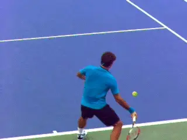
[A delayed transition point means less muscle inhibition.]
[The role of the wrist joint is therefore complex. Its movement allows the rotational acceleration but at the same time also controls the timing and the rate. This indicates an intricate relationship between the centripetal force on the racquet and the way the wrist joint is muscularly controlled.]
The critical piece of the puzzle in understanding this relationship, and more importantly in analyzing the role of the wrist, is the timing of the transition point. The timing of the transition point varies from player to player. Some break the transition point sooner and others later.
[Our research shows, however, that the longer the transition point is delayed, the less muscular inhibition (at the wrist joint) is required to control the rate of racquet rotation. The most advanced players for which data is available in fact delay the transition point until much nearer to contact and utilize minimal muscular inhibition.]
For these players, the orientation of the racquet at contact is controlled by the timing of attaining the transition point, with minimal rotational rate control from the wrist joint musculature.
So if a later transition point is preferable, how do players create it? Quite simply, it is done by maintaining the laid back orientation of the wrist for as long as possible.
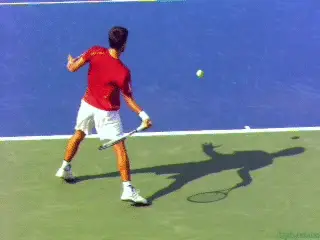
Players create later transition by intentionally keeping the wrist laid back.
However, this is often easier said than done. The laid back wrist is created as a dynamic consequence of the racquet flip in dynamic slot. Because of this the wrist has the tendency to release forward from elastic components of the stretch-shorten cycle.
Players must consciously prevent this release from happening. And in fact, one of the major developmental problems in teaching this forehand style occurs if the wrist joint is allowed to release forward with stretch-shorten element enhancement.
[In this case a noticeable "slapping" of the ball occurs. This comes with a very large contribution to the racquet rotation from wrist joint musculature. While conducive to forward speed, this decreases the vertical racquet speed enhancement that is the true goal of the dynamic slot.]
There is one final finding regarding the timing of the transition point. This relates to the forehand types. In the Type 1 and in some Type 2 forehands, the transition point is reached very early in the forward swing due to the more circular swing pattern.
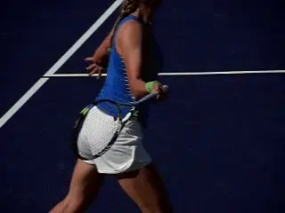
Rotation in Type 1 and Type 2 swings can come from active muscle contraction.
With these swings, the interaction between the force of the hand on the grip and the manner in which the wrist is manipulated is different than the Type 3 swing. In many cases with the Type 1 and Type forehands, the muscles of the wrist are actively used to cause rotation of the racquet approaching contact.
This finding, along with a lack of the dynamic slot to enhance vertical racquet speed, explains the effectiveness of these swings to develop forward racquet speed at the expense of vertical racquet speed. In other words, it becomes more difficult to concurrently optimize both, and to simultaneously generate speed and spin.
Grips Implications
The mechanical concepts discussed in these two forehand articles apply across the grip styles. This is because the mechanisms discussed here depend on the orientation of the shaft of the racquet and are independent of the twist orientation---that is, whether the racquet face is more open or closed.
As John Yandell has shown, there is a significant range of forehand grips in the pro game, including multiple variations of both eastern and semi-western. link These differences in grips simply alter the wrist joint angles and axes of wrist rotation.
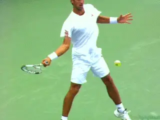
In general with extreme grips there is less wrist lay back at contact.
In general, more eastern grips require more extreme wrist lay back angles both in the dynamic slot and at also contact. The more western the grip, the less lay back, especially at contact. In addition the intial wrist lay back can include radial deviation, or downward flex, while there can be ulnar deviation, or upward flex in the forward swing.
Follow Through
You may have noticed that up to this point, despite the level of detail in the analysis, I have not said a word about follow through. This is because I don't focus on it. I work on optimizing the speed of trunk rotation, building independent motion of the arm, perfecting the dynamic slot and transition point, and optimizing the motions up to contact.
The main reason for this is I never work on someone's stroke mechanics without a full 3D data set. With 3D, I have perfect resolution all the way up to contact, and I have a way to measure the joint rotations and in many cases their causes. So, that gives me the luxury of a lot of diagnostic power that you just don't have when you're out there working with a student in the traditional fashion.
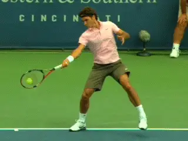
The followthrough has great oncourt diagnostic power.
I do believe however that the motions that you see on the follow through are very good diagnostically on the court for seeing what the conditions were up to and during contact. And so, as a coaching tool, the follow through is indispensable, because, as I've said, the motion happens far too fast for the eye to see. In many cases, your only chance of picking it up is to see what's going on in the follow through.
Review
So let's try to review what we have learned in the first two articles.
The backswing position with the racquet head to the outside and above the hand will cause the racquet to rotate (or flip) when forward motion of the hand generates a force on the grip early in the forward swing.
This is what we call the dynamic slot. The racquet rotation into the dynamic slot causes rotations (counter-rotations) at key joints of the hitting arm -- most notably, shoulder external rotations. The counter rotations eccentrically stretch the muscles, activating elements of the stretch-shorten cycle.
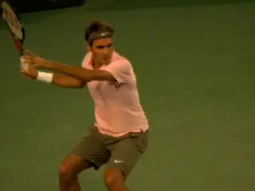
One more look at the creation of the dynamic slot.
The racquet orientation late in the dynamic slot is well aligned with the direction of the force of the hand on the grip as the forward swing continues. This creates a period of relatively linear acceleration of the racquet as it is pulled along grip end first. This linear acceleration continues until roughly the transition point.
We can see this very clearly in the high speed video of Roger Federer. Notice how long Federer's forehand stays on this path.
At the transition point, look how close Federer actually is to contact. When he breaks the transition point, the centripetal component of the force of the hand on the grip becomes prominent.
The centripetal force rotates the racquet past the transition point. This is accomplished by allowing forward motion from the wrist joint (largely flexion in his case). And boom! There you have it.
So, note that the movement to the contact is mostly a linear translation. Federer times the transition to the rotational component perfectly and appears to use that centripetal force like a master. It's brilliantly simple, really.
To Conclude
So what is the takeaway for the average player from these articles? Learn to develop the dynamic slot and understand the critical role of the transition point in optimizing racquet speed both horizontally and vertically.
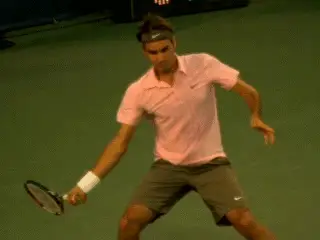
Federer times the transition to rotational acceleration brilliantly.

Dr. Brian Gordon has changed the understanding
technique. His Biomechanically Engineered Stroke
Technique (BEST) is the only empirically based
stroke mechanics system in the world, growing
from three decades of both academic and applied
on court research. He is a founder of the Tennis
Center for Performance Research in Miami,
Florida, which is creating a new paradigm for
player development. The center has assembled an
unprecedented group of specialists with cutting
edge knowledge across the entire range of tennis
performance.
To visit his website, [**Click
Here!**](https://tennisperformanceresearch.com/)
Top contact him directly, [**Click
Here!**](mailto:gamabrian@icloud.com)
← Developing ATP Forehand Part 1 | Biomechanics Index | Internal Shoulder Rotation Key To Serving Power →